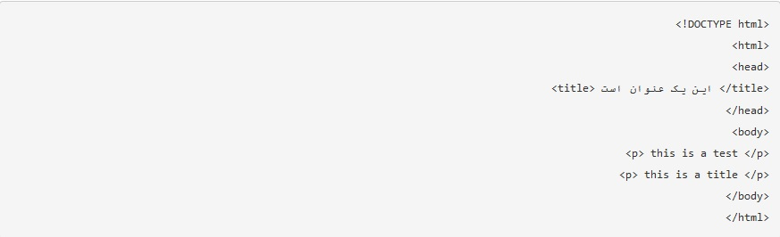
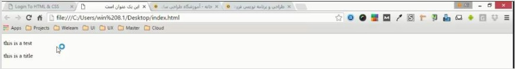
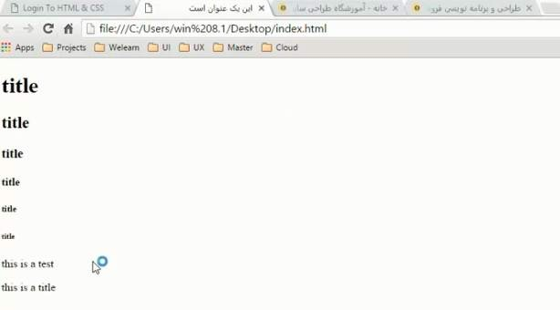
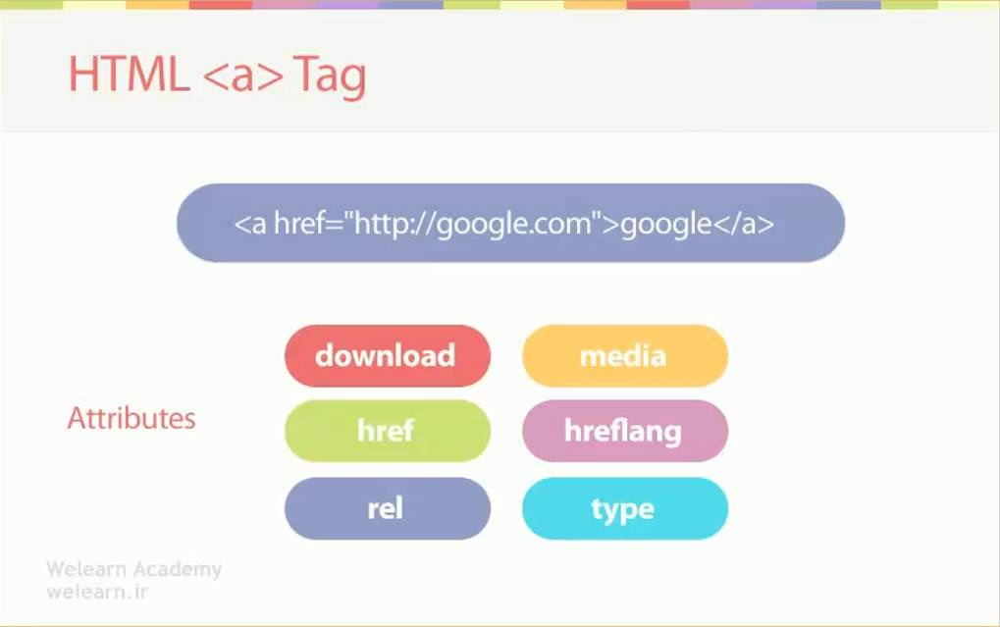
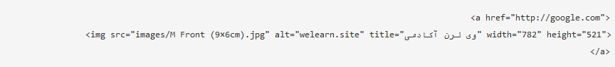
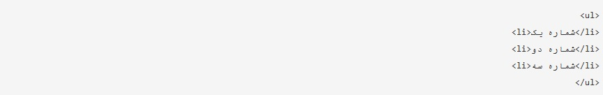
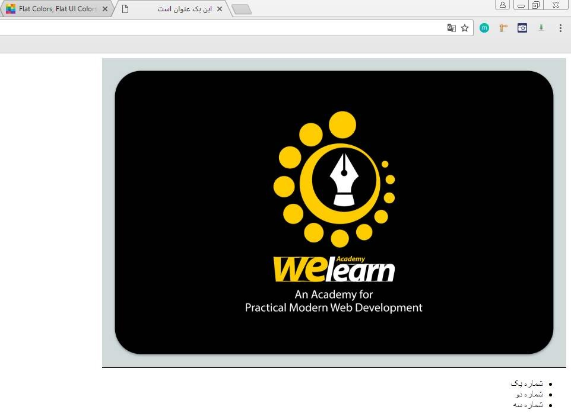

HTML
برای ورود به دنیای طراحی سایت در مرحله اول احتیاج به دو تا زبان داریم ، یکی زبان HTML و یکی زبان CSS حالا اول میخوایم براتون بگیم که زبان HTML و CSS چیه؟؟ بعد از اون شروع میکنیم به آموزش HTML و آموزش CSS 🙂 HTML مخفف Hyper Text Markup Language هست. خب حالا این یعنی چی؟؟؟!! معنیش به زبان ساده میشه، زبان نشانه گذاری حالا با ساده ترین ابزار موجود میخوایم کار کنیم. لطفاً دفترچه یادداشت (Notepad) ویندوز رو باز کنین و شروع کنین به نوشتن.

تگ DOCTYPE مخفف document type هست. معنیش این میشه که فایل ما از نوع HTML باشه. و این تگ در تمام سایت ها نوشته میشه و نوشتنش ضروریه. فایلی رو که نوشتین با نام index.html رو دسکتاپ ذخیره کنین. همچنین encoding فایل رو روی UTF-8 قرار بدین تا از زبان فارسی پشتیبانی کنه. حالا فایلی رو که روی صفحه ایجاد شده باز کنین. خب می بینین که یک صفحه مرورگر باز میشه و توی اون هیچی ننوشته که طبیعی هم هست چون ما هنوز چیز خاصی درست نکردیم. تگ ” title “ : خب ما میخوایم اون چیزی که دلمون میخواد رو داخل تب بنویسه. مثلاً تب دوم رو می بینین که نوشته “خانه – آموزشگاه طراحی سایت”. برای انجام این کار باید وارد فایلی که نوشتیم بشیم و داخل تگ باز و بسته ”
تگ p (پاراگراف)
تگ پاراگراف رو میخوام بهتون توضیح بدم .این تگ خییییییلی پر کاربرد هست. همون طور هم که از اسمش معلومه برای قرار دادن نوشته هامون استفاده میشه. شما می تونین هر متنی رو که دلتون میخواد داخل این تگ بنویسین و توی سایت نمایش بدین و به هر تعداد که بخواین (البته با توجه به اندازه متن) می تونین از این تگ استفاده کنین.
خب همون طور که می بینین خط اول، محتوای پاراگراف اولمون رو نوشته و خط دوم ، محتوای پاراگراف دوم رو نوشته. حالا این که چرا اینا رو کنار هم ننوشته و تو دو تا خط مجزا نوشته تو بحث آموزش CSS براتون مطرح می کنیم. تگ رو خوب به خاطر بسپارین. خیلی جاها کاربرد داره.
تگ های heading
همون طور که می دونین عنوان با متن فرق داره پس باید از تگ جداگانه ای برای نمایش عنوان استفاده کنیم.خب، تگ های مناسب عنوان، اسمشون heading هست.فرق اینا با هم تو اندازه متن (font size) و اهمیتشون برای موتور جستجو گوگل هست. به ترتیب از تگ h1 بزرگترین و پر اهمیت ترین هست تا تگ h6که کوچک ترین و کم اهمیت ترینشون هست. به مثال زیر توجه کنین تا خوب متوجه بشین. یادتون نره که حتما ً تمرین بکنین چون بدون تمرین فایده نداره.

نتیجه
تگ a (لینک)
تگaبرای لینک شدن به جایی استفاده میشه. حالا اون جا میتونه یک سایت دیگه باشه یا این که سایت خودمون باشه. href : این attribute خیییییلی مهمه و همیشه نوشته میشه. با استفاده از این attribute میتونیم بگیم که به کجا لینک بشیم. هم میتونیم به یک سایت دیگه لینک بشیم هم به صفحات داخلی سایت خودمون و حتی میتونیم به یک المان تو سایتون لینک بشیم (با نوشتن آی دی المان داخل href میشه این کر رو کرد).فقط به یک نکته توجه داشته باشین که برای لینک شدن به یک سایت حتما باید پروتکل رو بنویسین (http ,ftp, …) وگرنه لینک کار نمیکنه.
تگ img
صفت های ( attribute ) مهمِ برایِ تگ :
src :
هونطور که قبلا هم گفتیم این صفت برای آدرس دادن فایل مورد نظرمون هست. برای این منظور پوشه به نام ” images ” ساختیم و
عکس مورد نظرمون رو داخل اون گذاشتیم. اسم پوشه رو هر چی که دوست دارین میتونین بذارین ولی دقت کنین که حتما با حروف
لاتین باشه. حتی اگه نخواستین میتونین پوشه هم درست نکنین و عکس رو همین طوری کنار فایل index , style بگذارین ولی این
کار استاندارد نیست ، چون که در یک سایت عکس های زیادی قرار میگیره و همچنین فایل های دیگه ای هم باید اضافه کنیم . پس
برای راحتی کار و عملکرد بهتر باید حتماً پوشه جداگانه برای تصاویرمون بسازیم.
alt :
مخفف کلمه alternate هست که به عنوان متن جایگزین عکس به کار می رود. اگه به هر دلیلی عکس ما نمایش داده نشه، اون وقت
متنی که داخل alt نوشتیم، نشون داده میشه.
title :
اگر دقت کرده باشین وقتی داخل یک سایت میرین و نشانگر موس رو روی بعضی ار المان ها می برین، یک کادری زیر نشانگر ظاهر
میشه که داخلش یک متنی رو نوشته. این اتفاق با گذاشتن صفت title میوفته که اگر ازش استفاده بکنین بهتر هست.
width , height :
به ترتیب از راست، ارتفاع و عرض عکس رو مشخص میکنن. توصیه می کنیم این کار رو حتما انجام بدین تا هر عکسی که در سایت
قرار دادین به همون اندازه دلخواهتون نمایش داده بشه. جلوتر که بریم بیشتر توضیح میدیم. فعلاً در همین حد
کافیه.نکته : هر صفتی که برای تگی توضیح میدیم معنیش این نیست که فقط برای اون تگ قابل استفاده است بلکه تویِ تگ
های دیگه هم بستگی به کاربردشون میشه ازشون استفاده کرد. مثلاً صفت src رو دیدین که هم برا تگ
و هم برای تگ
ازش استفاده کردیم.
حالا اگر بخواین که عکستون به جایی لینک بشه به راحتی هر چه تمام میتونین این کار رو انجام بدین. چجوری؟؟ این جوری که پایین براتون نوشتیم:
لیست ها در html
- ul
- ol
- li
دو نوع لیست داریم تو HTML ، یکی شمارشی ( ol ) و یکی دیگه غیر شمارشی ( ul ) هست. برای ساختن منو و ایجاد ساختار لیست مانند از تگ UL استفاده می کنیم. که داخل اون تگ های LI قرار میگیرن. از تگ OL هم برای ساختن لیست های شمارشی استفاده میشه.
 تگ ol هم مشابه تگ ul نوشته میشه. کافیه که داخل کد بالا به جای ul بنویسین ol ، تا لیست شمارشی هم ایجاد بشه.